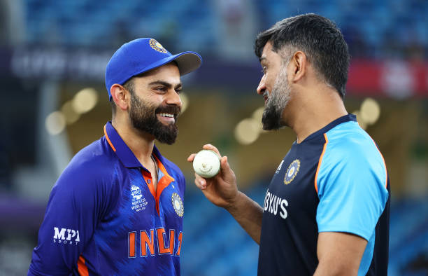

MS Dhoni, here are iconic friendships in cricket:
Virat Kohli is not only known for his exemplary cricket form but also for his historic friendship with the legendary Mahendra Singh Dhoni. He always believes in MSD and has always said that if he has a “genuine friend” in the field of cricket, it is Mahi (Mahendra Singh Dhoni). Just like that, here are 7 iconic friendships in the field of cricket.
1) Virat Kohli and Mahendra Singh Dhoni:

Let’s start with the idols, shall we? Kohli in the past has opened up that Dhoni was one person apart from his childhood coach and wife Anushka Sharma, who genuinely reached out to him during his tough phase and now he reiterated it while mentioning that the bond is unconditional. Under MS Dhoni, Virat Kohli made his India debut in 2008 against Sri Lanka. Since that time, he has always credited Dhoni as being a source of inspiration in his life.
2) Mahendra Singh Dhoni and Suresh Raina:
MS Dhoni and Suresh Raina are two Indian cricketers who have the most loyal bond with one another. Their bond runs so deep that it was on the same day, MS Dhoni and Suresh Raina both announced their retirement from international cricket. Suresh Raina retired from international cricket solely because Dhoni had retired. No other cricketer duo has the same bond as them.
3) Yuvaraj singh and Mahendra Singh Dhoni:
- Yuvraj Singh and Mahendra Singh Dhoni played key roles in the historic 2007 and 2011 World Cup victories.
- Years after the World Cup victories, both Singh and Dhoni have now retired and are enjoying their lives outside the cricket pitch.
- While the two players gave India its momentous victories, there have been rumours about the equation between them.
4) Mahendra Singh Dhoni and Harbajan singh:
Indian spin legend Harbhajan Singh dismissed reports of a rift between him and former India captain MS Dhoni, calling the 2011 World Cup-winning captain a “good friend” who has since become “very busy” with his life. Reports of a breakdown in relations between Harbhajan and Dhoni, who shared the Indian dressing room for more than a decade and played together at the Chennai Super Kings in the IPL, had been doing the round especially after the former officially called it quits.
5) Hardhik pandya and Mahendra Singh Dhoni:
Early this year, Hardik Pandya was asked about playing the MS Dhoni role in the ODIs. Pandya would matter-of-factly reply: “I don’t mind coming in and playing the role which somewhere down the line Mahi used to play.” But the sudden comparison weighed him down and he admitted: “But I have to evolve and that is life.”
6) Rishab pant and Mahendra Singh Dhoni:
"I always find it difficult to explain my relationship with MS. Dhoni. There are some with whom you can talk freely. I discuss everything with MSD. I have learned so much from him. I discuss things with him that I wouldn't discuss with anybody else. That's the kind of relationship with him,” said Pant.
7) Ravindra Jadeja and Mahendra Singh Dhoni:
Under his captaincy, India won the 2007 T20 World Cup, 2011 ODI World Cup and the 2013 ICC Champions Trophy. He led India to victory in the 2010 and 2016 Asia Cups. With the wicketkeeper-batter celebrating his birthday, Twitter went into a state of frenzy with members of the cricket fraternity and fans taking to the social media platform to wish him.